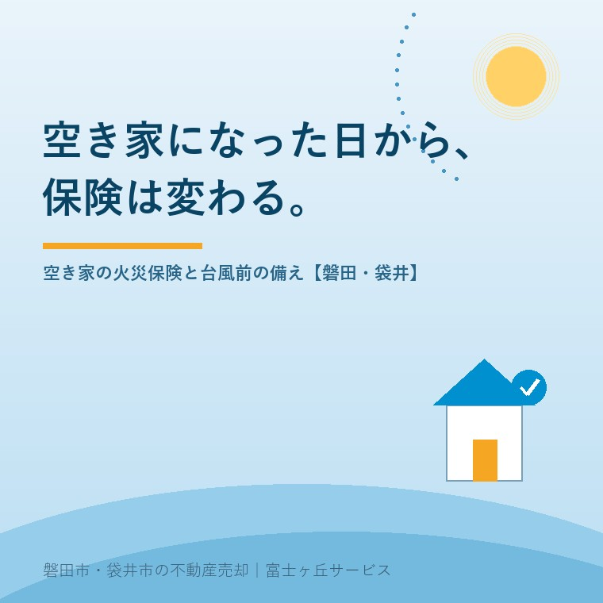

2026年7月27日｜カテゴリ：空き家管理・保険・リスク

この記事の要点
Q. 親が施設に入って実家が空き家に。火災保険は今のままでいい？
A. そのままにしてはいけません。住む人がいなくなったことを保険会社に伝えずにいると、契約上の通知義務に反し、いざというとき保険金が支払われないおそれがあります。空き家は「一般物件」扱いになって保険料が上がったり、加入を断られたりすることもあるため、台風シーズンの前に契約の確認が必要です。磐田市・袋井市・森町では、介護施設の運営から不動産事業を始めた富士ヶ丘サービスのような「介護×不動産」専門の会社に、保険の確認も含めた空き家の今後を相談するという選択肢があります。
親御さんの施設入居や相続で実家が空き家になったとき、電気や水道のことは気にしても、火災保険まで見直す方は多くありません。「親が昔から入っている保険があるから大丈夫」──実は、ここに大きな落とし穴があります。台風シーズンを迎えた今こそ確認していただきたい、「空き家と保険」の話です。
火災保険は、建物の使われ方によって「住宅物件」「一般物件」などの区分に分かれており、人が住んでいる家を前提にした住宅物件の契約は、保険料が安く設定されています。ところが誰も住まなくなると、放火や不審者侵入、傷みの放置など火災・損害のリスクが上がるため、保険の世界では原則として住宅物件ではなく「一般物件」として扱われます。
ここで重要なのが、契約の「通知義務」です。建物の使われ方が変わったこと（＝空き家になったこと）は、保険会社に通知すべき事項とされているのが一般的で、黙ったままでいると、事故が起きたときに保険金が支払われなかったり、契約を解除されたりするおそれがあります。「保険証券はあるのに、いざ台風で屋根が飛んだら出なかった」──これが一番避けたい事態です。
空き家として保険に入り直す場合の実情も知っておきましょう。
| 項目 | 空き家の火災保険の実情 |
|---|---|
| 加入の可否 | すべての保険会社が引き受けるわけではなく、管理状態や今後の利用予定によっては断られることもある |
| 保険料 | 一般物件扱いとなり、居住中と比べて1.5〜2倍程度になることが多い |
| 地震保険 | 一般物件では原則付けられない（地震保険は住宅物件が対象） |
| 引受の判断材料 | 定期的な管理（見回り・通風・草刈り）や、売却・賃貸など今後の予定が問われる |
「月に一度は見回りに行き、荷物も残っていて、いずれ子が住む予定」といった状態なら住宅物件に近い扱いで継続できる場合もあります。判断は保険会社ごとに異なるので、まずは現在の契約の保険会社・代理店に正直に現状を伝えて相談することが出発点です。
「古い家だし、燃えても壊れても仕方ない」と無保険を選ぶ方もいますが、空き家の本当のリスクは自分の建物の損害だけではありません。以前の記事でも触れたとおり、建物の瑕疵（手入れ不足・老朽化）が原因で瓦や外壁が飛び、隣家や通行人に被害を与えた場合、所有者は民法717条の工作物責任により、実質的に無過失でも賠償責任を負います。台風をきっかけにした近隣への被害は、数百万円規模の賠償になり得ます。
この賠償リスクに備える施設賠償責任保険（個人賠償責任特約等）は、火災保険に付帯して契約するのが一般的です。つまり火災保険が切れる・無効になるということは、賠償への備えも同時に失うということ。空き家を持ち続けるなら、①建物の損害への備え、②近隣への賠償への備え、の2つをセットで確認してください。
天竜川・太田川水系を抱えるこの地域では、台風・大雨への備えは毎年の宿題です。空き家になった実家について、今週末にでも次の5点を確認しましょう。
そして、保険料を払い続けてでも持ち続けるべき家なのか、一度立ち止まって考えることも大切です。空き家の維持には固定資産税・保険料・管理の手間が毎年かかり続けます。誰も住む予定がないなら、傷みが進んで売りにくくなる前に、売却や活用へ舵を切るほうが、費用もリスクも小さくなることが多いのです。
富士ヶ丘サービスは、介護施設の運営から不動産事業を始めた会社として、施設入居で空き家になった実家の管理・保険の確認事項・売却や活用の検討を、ひとつのテーブルでご相談いただけます。保険の個別の契約内容は保険会社・代理店への確認が必要ですが、その前提になる「この家をどうするか」の整理は、磐田市・袋井市に地域密着の当社がお手伝いします。実家じまい相談室もあわせてご利用ください。
ふじがおか実家カルテ｜「持ち続けるか、動かすか」の判断材料に
維持費・売りやすさ・支障の有無。空き家の現状を、まず1冊に。
登記情報と固定資産税通知書から、名義・道路・農地・建物の状態を宅建士が机上で確認し、持ち続けた場合の費用感と売却の見通しを整理してお渡しします。
本記事は2026年7月27日時点の情報をもとに作成しています。保険の物件区分・通知義務・引受可否・保険料は保険会社や契約内容により異なります。個別の契約の扱いは、必ずご契約の保険会社・代理店にご確認ください。

この記事を書いた人：大石浩之（宅地建物取引士）
磐田市・袋井市・森町で「介護×相続×空き家」に特化した不動産売却支援を行う富士ヶ丘サービスの代表取締役・宅地建物取引士。介護施設の運営から不動産事業を始めた経験をもとに、売主とご家族が困らない売却を一件ずつお手伝いしています。プロフィール
磐田市・袋井市・森町の実家じまい・相続空き家相談
固定資産税通知書だけでも相談できます
住所があいまいでも、通知書や写真から名義・道路・農地・残置物の確認順を整理します。カルテ申込またはLINEで状況を送ってください。
富士ヶ丘サービス株式会社／静岡県磐田市見付5789番地1／TEL:0538-31-3308／静岡県知事 (2) 第14083号／代表取締役・宅地建物取引士 大石 浩之